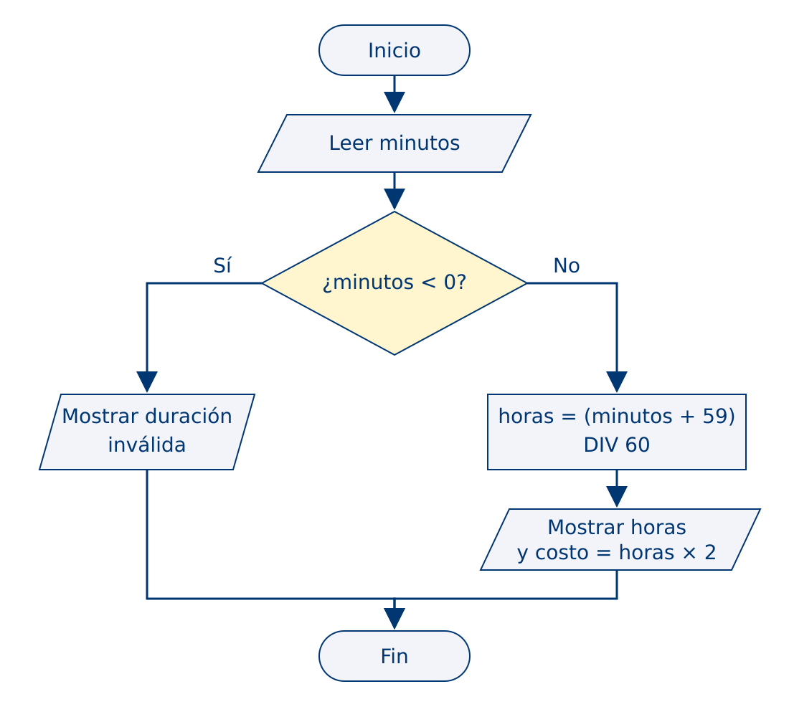
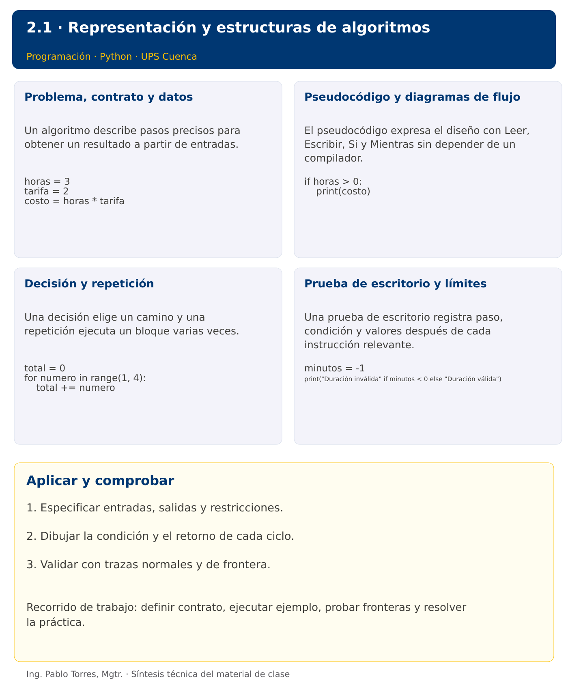

Programación

2.1 · Representación y estructuras de algoritmos · Java
Autor: Ing. Pablo Torres, Mgtr.
Unidad 2: Algoritmos
Institución: Universidad Politécnica Salesiana · Computación · Cuenca
Índice del curso · Versión Python · Presentación · Anterior · Siguiente
Conceptos · Demostración · Práctica de clase · Lo esencial
Contexto. Calcular el costo de un estacionamiento exige acordar qué significa una fracción de hora y qué ocurre con una duración inválida. El algoritmo debe resolver esas decisiones antes de elegir Python o Java.
Prerrequisitos. Álgebra de Boole y operaciones aritméticas.
1. Conceptos y ejemplos
1.1. Problema, contrato y datos
Un algoritmo describe pasos precisos para obtener un resultado a partir de entradas. Delimitar qué datos recibe, sus unidades y rangos, qué entrega y qué casos rechaza. Un contrato distingue precondiciones de postcondiciones. “Calcular un promedio” es incompleto si no se define qué ocurre con cero observaciones. Descomponer el problema en lectura, procesamiento y presentación evita mezclar reglas con mensajes.
Aplicar en Java. Usar variables con tipo explícito para representar entradas y resultados. Separar el algoritmo del contenedor public class y del punto de entrada main.
int horas = 3;
int tarifa = 2;
int costo = horas * tarifa;
1.2. Pseudocódigo y diagramas de flujo
El pseudocódigo expresa el diseño con Leer, Escribir, Si y Mientras sin depender de un compilador. Un diagrama de flujo representa inicio y fin con terminales, entrada y salida con paralelogramos, procesos con rectángulos y decisiones con rombos. Rotular las ramas de una decisión. Un retorno de una flecha debe mostrar dónde se vuelve a comprobar la condición. Mantener correspondencia entre ambos formatos.
Aplicar en Java. Las llaves delimitan bloques. Indentar facilita la lectura, pero el compilador determina los bloques mediante llaves. No colocar un punto y coma inmediatamente después de la condición de un if.
if (horas > 0) {
System.out.println(costo);
}
1.3. Decisión y repetición
Una decisión elige un camino y una repetición ejecuta un bloque varias veces. Definir primero si se conoce el número de repeticiones. Un ciclo necesita estado inicial, condición de permanencia y actualización que acerque al final. Un contador mide ocurrencias y un acumulador combina valores. En una suma, inicializar el acumulador en cero; en un producto, en uno.
Aplicar en Java. Usar if, while y for. Un for con tres componentes permite visualizar inicialización, condición y actualización. Respetar el límite inclusivo o exclusivo definido en el contrato.
int total = 0;
for (int numero = 1; numero <= 3; numero++) {
total += numero;
}
1.4. Prueba de escritorio y límites
Una prueba de escritorio registra paso, condición y valores después de cada instrucción relevante. Seleccionar un caso normal, el mínimo permitido, un valor fuera de dominio y un caso que tome la otra rama. La traza permite encontrar errores lógicos aun cuando el programa ejecuta. Terminar no demuestra que el resultado sea correcto; una prueba aislada tampoco cubre todas las entradas.
Aplicar en Java. Compilar comprueba parte de la sintaxis y de los tipos, pero no la corrección del algoritmo. Ejecutar los mismos datos utilizados en la traza y explicar cualquier diferencia.
int minutos = -1;
System.out.println(minutos < 0 ? "Duración inválida" : "Duración válida");
Los bloques breves anteriores ilustran una operación y pueden requerir variables o imports del contexto. Utilizar la demostración siguiente como programa completo.
Diagrama de la demostración

Síntesis visual

2. Demostración guiada
Problema. Calcular las horas iniciadas y el costo de una estancia de 125 minutos a tarifa 2 por hora iniciada.
Contrato de esta demostración. Recibir minutos enteros no negativos. Para cero, obtener cero horas y costo cero. Rechazar negativos. La demostración fija 125; modificar esa asignación para probar 0, 60, 61 y -1.
Regla de estacionamiento. Cobrar 2 por cada hora iniciada. Una duración de cero minutos cuesta cero. Rechazar duraciones negativas. Para enteros no negativos, calcular horas como (minutos + 59) dividido enteramente por 60.
Leer minutos
Si minutos < 0 Entonces
Escribir "Duración inválida"
SiNo
horas <- (minutos + 59) DIV 60
Escribir horas, horas * 2
FinSi
Fuente: ejemplos/Demo.java.
public class Demo {
public static void main(String[] args) {
int minutos = 125;
if (minutos < 0) {
System.out.println("Duración inválida");
} else {
int horas = (minutos + 59) / 60;
System.out.println("Horas: " + horas);
System.out.println("Costo: " + horas * 2);
}
}
}
Ejecutar
Abrir una terminal dentro de 02/2.1-algoritmos/java/ejemplos/ y ejecutar:
javac -encoding UTF-8 -d build *.java
java -cp build Demo
Salida esperada
Horas: 3
Costo: 6
Interpretación. Seguir las asignaciones y los bloques en orden, identificar qué instrucción produce cada línea y contrastar con el contrato. Modificar un dato por vez y anticipar el resultado antes de ejecutar. La salida de referencia es una expectativa; el registro de verificaciones indica qué ejecuciones se realizaron.
3. PC2.1 · Práctica de clase
Diseñar un algoritmo para sumar consumos enteros no negativos hasta recibir -1. Rechazar otros negativos sin acumularlos. Producir pseudocódigo, diagrama y prueba de escritorio. Mostrar cantidad y suma; no calcular promedio cuando no existan datos. Implementar en un lenguaje solo después de comprobar el diseño.
Requisitos y restricciones
- Resolver en una sola versión, Python o Java.
- Mantener nombres y responsabilidades indicados; explicar cualquier adaptación idiomática.
- Aplicar únicamente los conceptos ya introducidos.
- Conservar las entradas cuando el enunciado lo exija.
- Distinguir valores fuera de contrato de errores que el programa debe gestionar.
Casos de aceptación de la PC
| Entrada / escenario | Resultado esperado |
|---|---|
| 5, 3, -1 | cantidad 2; suma 8 |
| -1 | cantidad 0; suma 0 |
| -2, 4, -1 | rechazar -2; cantidad 1; suma 4 |
Probar y registrar evidencia
Crear una carpeta personal PC2.1 separada de las demostraciones. Guardar cada caso con entrada, resultado esperado y resultado real. Compilar javac -encoding UTF-8 -d build *.java y ejecutar java -cp build Solucion; usar Solucion.java como entrada personal. Para entradas de teclado, guardar casos/entrada-01.txt y redirigirla con < casos/entrada-01.txt. Para funciones, crear llamadas con los datos de la tabla.
- Registrar
evidencias/PC2.1.mdcon comandos, versión real, salidas y explicación. - Crear un commit funcional como
feat(pc2.1): implementar-regla-principal. - Obtener el hash real con
git rev-parse HEADy anotarlo en la evidencia. - Revisar el cambio con
git show HASHy comparar avances congit diff HASH_ANTERIOR HASH_ACTUAL. Sustituir los marcadores por hashes reales. - Agregar una prueba de frontera distinta de las incluidas y justificar qué error detectaría.
No se requiere proyecto acumulativo ni rúbrica individual de esta PC.
Lo esencial
- Especificar entradas, salidas y restricciones.
- Dibujar la condición y el retorno de cada ciclo.
- Validar con trazas normales y de frontera.
Referencias técnicas
Índice del curso · Versión Python · Presentación · Anterior · Siguiente